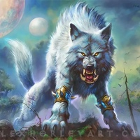
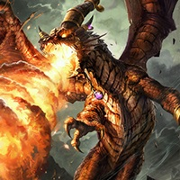
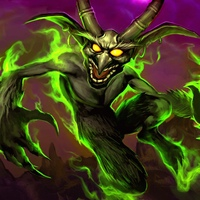
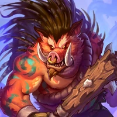
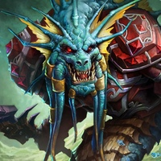

1) Вы можете собирать триплеты из ключевых бафферов: Вайш’ирского провидца и Навигатора Плавников Скверны, но постарайтесь продавать их после этого. Лучше вернуть бафферов в общий пул существ, чтобы с обновлениями таверны с большей вероятностью найти их снова.
2) Палеомурлок-разведчик не раскапывает мурлоков выше вашего уровня таверны и себя самого. Если вы находитесь на тире-4, то не сможете раскапывать Короля Багургла (нужен 5 уровень) и Адаптозавра (нужен 6 уровень).
3) Даже если на столе только мурлоки и Бранн Бронзобород, первый разыгранный Адаптозавр получит 4 баффа адаптации — с высоким шансом среди них будет божественный щит и яд. Если их нет, помогут Ядовитый Плавник, Раздражодуль или Надина Красная.

Звери
Полезные советы по геймплею:
1) Единственный зверь, которому нужно дать провокацию, — Голдринн Великий волк. Притом сделать это нужно как можно быстрее, чтобы он умирал первым в каждом бою. Пещерную гидру можно таунтить, только если вы будете баффать ее с помощью боевых кличей, но это уже не будет стратегией зверей.
2) Если на столе несколько Голдриннов Великий волков, ставьте левее того, что без провокации и с меньшими характеристиками.
3) Столы со зверями становятся сильнее не за счет баффов, а за счет триплетов ключевых угроз. Ищите триплеты Барона Риведера, Голдринна Великого волка и других. Не оставляйте место для баффера, а заполняйте его семью боевыми угрозами.

Драконы
Полезные советы по геймплею:
1) Вы можете ставить две Надины Красных на стол, чтобы дважды за бой получить божественные щиты. Другой вариант — комбинация «Страшный ара + Надина Красная». Важен вопрос позиционирования стола с двумя Надинами: исходите из способностей оппонента и специфики вашего стола — универсальных правил тут нет.
2) Не собирайте триплет из Надины Красной — он ничем не отличается от обычной копии кроме характеристик. Две обычные Надины Красные на столе лучше, чем одна золотая.
3) Стоит ли баффать Надине Красной провокацию — интересный вопрос. Есть ситуации, когда бафф помогает, а в других — мешает. Опять же, всё зависит от вашего стола и композиции оппонента.

Демоны
Полезные советы по геймплею:
1) Обратите внимание на Самоотверженную героиню (даст божественные щиты огромным демонам) и Пещерную гидру или Врагореза-4000 даже без баффов (собьют божественные щиты противника).
2) Также вы можете дать большинству крупных угроз провокации с помощью Защитника Аргуса, а после баффать их Крепким мародером.
3) С последним патчем сильнее стали столы с демонами и Бароном Ривендером, особенно если на нем уже есть Демонический слуга. Дополните стол Самоотверженной героиней, в этом случае Барон Ривендер раскроет себя на максимум.

Свинообразы
Полезные советы по геймплею:
Свинобразы примечательны, потому что играть ими можно на разных стадиях игры — при этом всегда успешно. Новый тип существ хорош со старта, побеждает в мидгейме, а к концу игры может разогнаться до огромных характеристик, которые никто не остановит. При этом столы со свинобразами разнообразные и вариативные: не так много шаблонов, много простора для творчества.

Наги
Полезные советы по геймплею:
Наги — создания, ненасытные до заклинаний, которых влечет к магии. Они или предоставляют вам заклинания, или делаются сильнее в период их срабатывания. Один раз в ход: уже после того как вы разыгрываете заклинание, приобретает +2 к здоровью. Уже после того как вы разыгрываете заклинание, предоставляет 4 дружеским нагам +1/+1